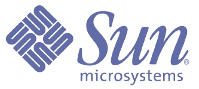

Welcome to ISMIR 2009
The Tenth International Society for Music Information Retrieval Conference will take place October 26-30, 2009 (Monday through Friday), in Kobe, Japan. Looking at the recent rapid growth of ISMIR conferences since its inception in 2000 and the expansion of the music information retrieval (MIR) community, MIR people may no longer consider acronym MIR as "music information retrieval" in the strict sense, but rather think that MIR essentially fits "music information research" in a broad sense. Correspondingly, MIR also draws considerable attention from other research/application fields. ISMIR therefore aims to open a new horizon of the exchange and discussion of ideas, issues, results, and perspectives for people of widespread areas, such as representatives of academia, industry, entertainment, and education, including researchers, developers, educators, librarians, students, and professional users. Alongside presentations of original theoretical research and practical work, ISMIR provides introductory and in-depth tutorials, and a venue for the showcase of current MIR-related products and systems.
Important Dates
- Deadline for submission of tutorial proposals: January 31, 2009
- Deadline for submission of papers: May 8, 2009
The deadline was extended to May 15 (Fri), 23:00, JST (GMT +09:00).
The deadline was extended to May 22 (Fri), 23:00, JST (GMT +09:00). - Author rebuttal period: June 26 - July 3,
The rebuttal period was changed to July 3 (Fri) - July 8 (Wed), 2009 - Notification of paper acceptance: July 17, 2009.
The date was changed to July 20 (Mon), 12:00, JST (GMT +09:00).
The date was changed to July 23 (Thu), 12:00, JST (GMT +09:00).
- Deadline for submission of camera-ready papers: August 7, 2009.
The date was changed to August 10, 2009. - Deadline for submission of abstracts for late-breaking / demo: August 31, 2009
- ISMIR 2009: October 26-30, 2009
News
| October 22, 2009 | A PDF copy of the Program Guide uploaded |
| October 20, 2009 | PDF files of the papers uploaded (Program page) |
| October 5, 2009 | Music Performances page uploaded |
| October 2, 2009 | Information for Presenters page uploaded |
| Social Program page uploaded | |
| September 24, 2009 | Program page updated |
| September 1, 2009 | Invited Presentation page uploaded |
| August 28, 2009 | Keynote Talks schedule updated |
| August 27, 2009 | Panel Discussion Schedule updated |
| August 14, 2009 | Poster Session Schedule updated |
| August 7, 2009 | Oral Session Schedule updated |
| Access page uploaded | |
| August 6, 2009 | Sponsors list updated |
| July 30, 2009 | Call for Papers page updated |
| July 28, 2009 | Call for Papers page updated |
| July 24, 2009 | Accepted-papers list uploaded |
| July 17, 2009 | Notification date of paper acceptance extended |
| Early registration deadline, camera-ready submission deadline extended | |
| July 17, 2009 | Tutorials page updated |
| July 9, 2009 | Satellite Events page uploaded |
| July 2, 2009 | Conference Venue page updated |
| Accommodation page uploaded | |
| The author rebuttal period extended | |
| May 13, 2009 | Online registration system became available |
| May 12, 2009 | The paper submission deadline extended |
| The registration fee was revised | |
| May 8, 2009 | The LaTeX template package updated |
| May 1, 2009 | List of program committee members updated |
| April 30, 2009 | The LaTeX template package was updated |
| April 27, 2009 | The paper submission deadline extended |
| The online paper submission system became available | |
| April 23, 2009 | The LaTeX and Word template packages uploaded |
| April 8, 2009 | Paper submission page updated |
| March 30, 2009 | Special Session: f(MIR) announced |
| March 25, 2009 | Registration page uploaded |
| Program page uploaded | |
| Corporate Support page uploaded | |
| Tutorials page updated | |
| February 17, 2009 | Paper submission page renewed |
| January 14, 2009 | ISMIR2009 website open |
ISMIR 2009 Sponsors
Gold sponsors:
- Sun Microsystems
 - Gracenote